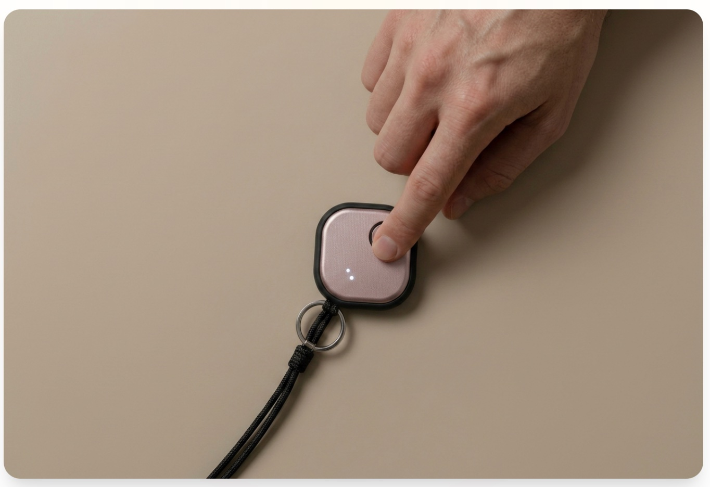
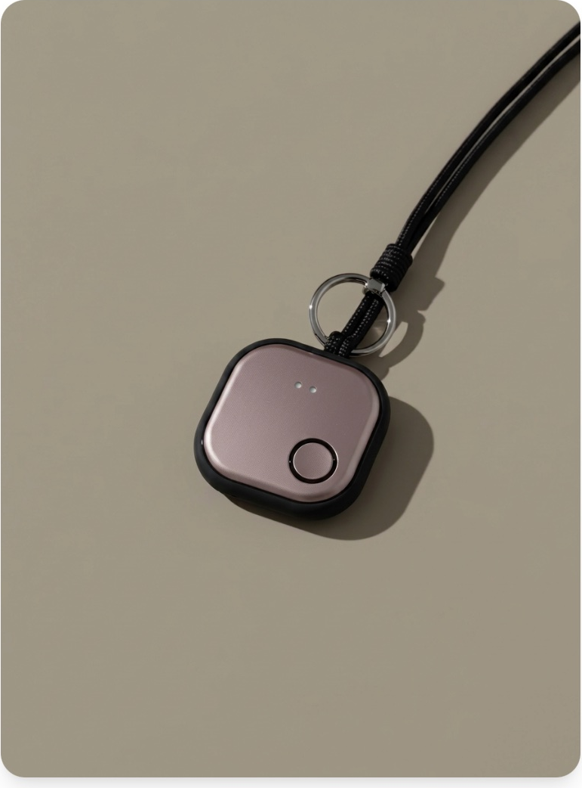
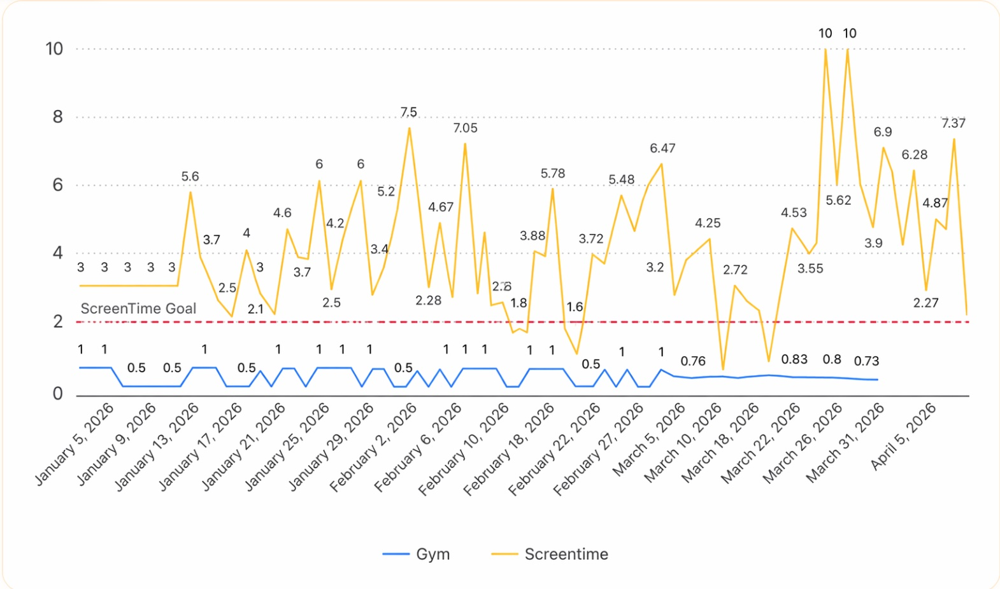

A physical habit tracker that logs your progress with a single press. No apps. No distractions. Just track and move on.

You open your phone to check off a habit — and 20 minutes later you're deep in social media. Sounds familiar?
What was supposed to take 5 seconds turns into 20 minutes of scrolling.
Every time you pick up your phone to log a habit, you risk losing your flow.
The harder it is to track, the less likely you are to stick with it.
A simple physical device that makes habit tracking frictionless. Press once to log. That's it. Your focus stays where it matters.

TapRoutine is designed to be the simplest part of your routine.
Complete a habit? Just press TapRoutine. One press, one log. Done.
Use different tap patterns to track multiple habits — workout, reading, water, meditation.
Open the dashboard anytime to see streaks, charts, and progress over time.
Everything you need to build better habits — nothing you don't.
A real device on your desk. No screens needed.
Break the cycle. Log without opening your phone.
One press takes less than a second. No friction.
Track different habits with different tap patterns.
View streaks, trends, and progress anytime.
The tactile press makes tracking feel intentional.
All your habits, streaks, and stats in one beautiful dashboard — when you're ready to look.

TapRoutine is in development. Join now and help shape the future of distraction-free habit tracking.
Be among the first to get your hands on TapRoutine when it launches.
Your feedback as an early supporter directly influences the final product.
TapRoutine is designed by people who believe self-improvement shouldn't require a screen.
Sign up for updates and be the first to try TapRoutine when it launches.
Join the Waitlist →No spam. Unsubscribe anytime. We respect your inbox.
TapRoutine is a small physical device that lets you track your daily habits with a single press — no phone, no app, no distractions.
You press the button to log a habit. Different tap patterns can represent different habits. Your data syncs to a clean dashboard you check whenever you want.
TapRoutine is currently in development. Join the waitlist to be the first to know when it launches and to get early-bird access.
The whole point of TapRoutine is to keep you off your phone. The dashboard is optional — check it only when you want to review progress.
Anything you want — workouts, reading, meditation, water intake, screen-time goals, study sessions. Whatever habit matters to you.